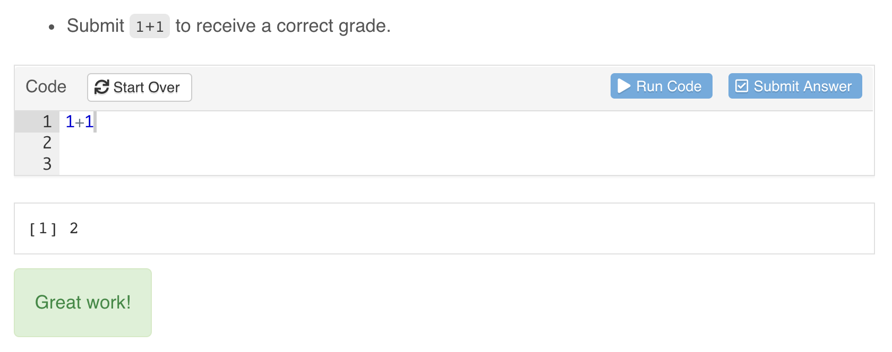
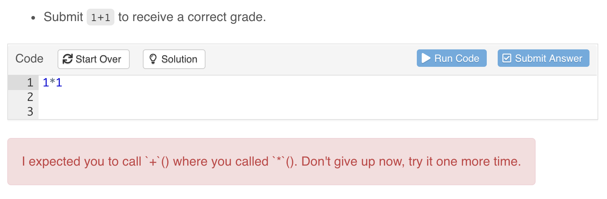
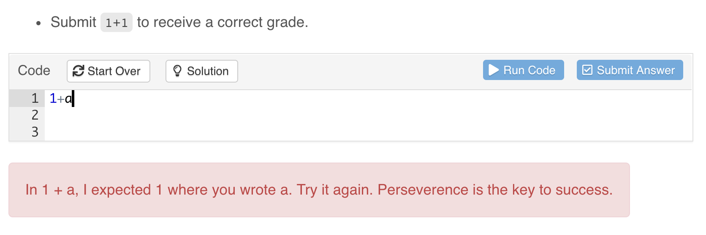

Exercises
Overview
Exercises are interactive R code chunks that allow readers to directly execute R code and see its results. There are many options associated with tutorial exercises (all of which are described in more detail below):
| Option | Description |
|---|---|
exercise.cap
|
Caption for exercise chunk (defaults to “Code”) |
exercise.eval
|
Whether to pre-evaluate the exercise so the reader can see some default output (defaults to FALSE).
|
exercise.lines
|
Lines of code for exercise editor (default to size of code chunk). |
exercise.timelimit
|
Number of seconds to limit execution time to (defaults to 30). |
exercise.checker
|
Function used to check exercise answers (e.g., gradethis::grade_learnr()).
|
exercise.blanks
|
Regular expression to find blanks requiring replacement in the exercise code. See Checking Blanks below. |
exercise.error.check.code
|
A string containing R code to use for checking code when an exercise evaluation error occurs (e.g., “gradethis::grade_code()”).
|
exercise.completion
|
Whether to enable code completion in the exercise editor. |
exercise.diagnostics
|
Whether to enable code diagnostics in the exercise editor. |
exercise.startover
|
Whether to include a “Start Over” button for the exercise. |
exercise.warn_invisible
|
Whether to display an invisible result warning if the last value returned is invisible. |
exercise.reveal_solution
|
Whether or not the solution should be revealed to the user (defaults to TRUE). See Hiding Solutions below.
|
Note that these options can all be specified either globally or per-chunk. For example, the following code sets global default options using the setup chunk and also sets some local options on the addition chunk:
There are also some other specialized chunks that can be used with an exercise chunk, including:
Exercise setup chunks, which enable you to execute code to setup the environment immediately prior to executing submitted code.
Exercise solution chunks which enable you to provide a solution to the exercise that can be optionally viewed by users of the tutorial.
The use of these special chunks is also described in detail below.
Exercise Evaluation
By default, exercise code chunks are NOT pre-evaluated (i.e there is no initial output displayed for them). However, in some cases you may want to show initial exercise output (especially for exercises like the ones above where the user is asked to modify code rather than write new code from scratch).
You can arrange for an exercise to be pre-evaluated (and its output shown) using the exercise.eval chunk option. This option can also be set either globally or per-chunk:
Exercise Setup
Code chunks with exercise=TRUE are evaluated within standalone environments. This means that they don’t have access to previous computations from within the document. This constraint is imposed so that users can execute exercises in any order (i.e. correct execution of one exercise never depends on completion of a prior exercise).
Exercise Setup Chunks
You can arrange for setup code to be run before evaluation of an exercise to ensure that the environment is primed correctly. There are three ways to provide setup code for an exercise:
- Add code to a global
setupchunk - Create a shared setup chunk
- Create an exercise-specific setup chunk
Each of these is described in more detail below. Note that you may also chain setup chunks, which is particularly helpful when exercises build upon each other.
Add code to the global setup chunk
Code in the global setup chunk is run once at the startup of the tutorial and is shared by all exercises within the tutorial. For example:
Create an exercise-specific -setup chunk
learnr will automatically associate any chunk with a label in the format <exercise>-setup as a setup chunk specifically associated with <exercise>, where <exercise> is replaced with the label of the exercise chunk. For example, the filter-setup chunk will be used as the setup chunk for the filter exercise:
Chained setup chunks
If may also chain setup chunks where each setup chunk inherits its parent setup chunk using the exercise.setup chunk option. (Note: You must use exercise.setup for chaining. You cannot rely on the -setup suffix labelling scheme.) learnr will keep following the trail of exercise.setup chunks until there are no more chunks to be found. To demonstrate, we can convert the first exercise in the above examples to be another setup chunk called filtered-flights with its exercise.setup=prepare-flights. This will now filter the data and store it and can be referenced inside the arrange exercise:
You can chain use exercise chunks in the setup chunk chain, but keep in mind that the code as it appears in the R Markdown source is used to serve as the setup code, not the user input. For example, if you turned filtered-flights back to an exercise, the pre-filled code is used as setup for the arrange exercise that use it as its setup:
Using Files in Exercises
Occasionally, you may write an exercise that requires users to interact with files on disk, such as data files in .csv or .rds format. learnr will look for a folder named data/ in the same directory as the tutorial source and, if present, will make this directory available to users in all exercises in the tutorial.
To ensure consistency between each evaluation of the user’s code, users interact with a temporary copy of the original directory. This way, users cannot overwrite or delete the original files. Additionally, in the exercise, the directory is always called data/.
There are three ways authors can include files for use in exercises:
Store the files in a
data/directory in the same directory as the tutorial.Use the setup chunk to download or write the files to a
data/directory.Use the
tutorial.data_dirglobal option or theTUTORIAL_DATA_DIRenvironment variables to specify a path to a data directory.
In the example below, the global setup chunk is used to write data/flights_jan.csv and users are asked to load this file with read_csv().
Hints and Solutions
You can optionally provide a hint or solution for each exercise that can be optionally displayed by users. Hints can be based on either R code snippets or on custom markdown/HTML content.
R Code Hints
To create a hint or solution based on R code simply create a new code chunk with “-hint” or “-solution” chunk label suffix. For example:
A “Hint” or “Solution” button is added to the left side of the exercise header region:

Markdown Hints
To create a hint based on custom markdown content simply add a <div> tag with an id attribute that marks it as hint for your exercise (e.g. “filter-hint”). For example:
The content within the <div> will be displayed underneath the R code editor for the exercise whenever the user presses the “Hint” button.
Multiple Hints
For R code hints you can provide a sequence of hints that reveal progressively more of the solution as desired by the user. To do this create a sequence of indexed hint chunks (e.g. “-hint-1”, “-hint-2,”-hint-3", etc.) for your exercise chunk. For example:
Hiding Solutions
By default, the exercise solution is made available to the user with the “Solution” or “Hint” button (if there are hints those will appear first). If you would prefer not to reveal the solution to an exercise, you can disable revealing the solution by adding exercise.reveal_solution = FALSE to the chunk options of either the exercise or its corresponding *-solution chunk.
You can also set this option globally in the global setup chunk with tutorial_options(). When set this way, the chunk-level option will take precedence over the global option so that you can choose to always reveal or hide the solution to a particular exercise. The current default is to reveal exercise solutions, but in a future version of learnr the default behavior will change to hide solutions.
Progressive Reveal
You might want users of your tutorials to see only one sub-topic at a time as they work through the material (this can be helpful to reduce distractions and maintain focus on the current task). If you specify the progressive option then all Level 3 headings (###) will be revealed progressively. For example:
You can also specify this option on a per topic basis using the data-progressive attribute. For example, the following code enables progressive rendering for a single topic:
You can also use data-progressive=FALSE to disable progressive rendering for an individual topic if the global progressive option is TRUE.
Progressive reveal provides an easy way to cue exercises one at a time: place each exercise under its own Level 3 header (###). This can be useful when a second exercises builds on the first, giving away the answer to the first.
Note that this feature is only available if you are using the learnr::tutorial R Markdown format (other custom formats may have their own internal mechanisms for progressive reveal).
Exercise Skipping
When the progressive option is set to true, the tutorial will require students to complete any exercises in a sub-section before advancing to the next sub-section.
You may want to allow users of your tutorials to skip through exercises that they can’t quite figure out. This might especially be true if you want users to be able to optionally see the next exercise even if they haven’t completed the prior one.
If you specify the allow_skip option then students will be able to advance through a sub-section without completing the exercises. For example:
You can also specify this option on a per sub-topic basis using the data-allow-skip attribute. For example, the following code enables exercise skipping within a single sub-topic:
You can also use data-allow-skip=FALSE to disable exercise skipping rendering for an individual sub-topic if the global allow-skip option is TRUE.
Exercise Checking
learnr provides allows full control over feedback provided to exercise submissions via exercise.checker in tutorial_options(). We’ll eventually cover how to implement a custom exercise.checker, but for sake of demonstration, this section uses gradethis’s approach to exercise checking, which doesn’t require knowledge of exercise.checker (NOTE: gradethis is still a work-in-progress. You may want to consider alternatives such as checkr). To use gradethis’s approach to exercise checking inside of learnr, just call gradethis_setup() in a setup chunk, which will set tutorial_options(exercise.checker = gradethis::grade_learnr) (among other things).
Checking Results
Checking of exercise results may be done through a *-check chunk. With a gradethis setup, results can be graded with grade_result(), like so:
When an exercise *-check chunk is provided, learnr provides an additional “Submit Answer” button, which allows users to experiment with various answers before formally submitting an answer:

Checking Code
Checking of exercise code may be done through a *-code-check chunk. With a gradethis setup, if you supply a *-solution chunk and call grade_code() inside *-code-check, then you get detection of differences in the R syntax between the submitted exercise code and the solution code.

It’s worth noting that, when a *-code-check chunk is supplied, the check is done prior to evaluation of the exercise submission, meaning that if the *-code-check chunk returns feedback, then that feedback is displayed, no exercise code is evaluated, and no result check is performed.
Checking Blanks
Occasionally, you may include blanks in the pre-filled code in your exercise prompts — sections of the code in the exercise prompt that students should fill in. By default, learnr will detect sequences of three or more underscores, e.g. ____ as blanks, regardless of where they appear in the user’s submitted code.

You can choose your own blank pattern by setting the exercise.blanks chunk option to a regular expression that identifies your blanks. You may also set exercise.blanks = TRUE to use the default learnr blank pattern, or exercise.blanks = FALSE to skip blank checking altogether. Globally tutorial_options() can be used to set the value of this argument for all exercises.
Submitted code with blanks will still be evaluated, but the other exercise checks will not be performed. This lets the student see the output of their code—which may produce a valid result—but still draws the student’s attention to the code that needs to be completed.
Checking Errors
In the event that an exercise submission generates an error, checking of the code (or its result, which is an error condition) may be done through either a *-error-check chunk or through the global exercise.error.check.code option. If an *-error-check chunk is provided, you must also include a *-check chunk, typically to provide feedback in case the submission doesn’t generate an error.
With a gradethis setup, exercise.error.check.code is set to grade_code(). This means that, by default, users will receive intelligent feedback for a submission that generates an error using the *-solution chunk, if one is provided.

To learn more about grading exercises with gradethis, see its grading demo (gradethis::gradethis_demo()).
Custom Checking
If you need custom exercise checking logic that isn’t already provided grading packages like gradethis, then you may want to write your own exercise.checker function. This function is called on exercise submission whenever *-check or *-code-check chunks exist. When called, this function receives all the information that learnr knows about the exercise at the time of the checking, including the user_code, solution_code, check_code, exercise environments, the last_value (if any), and the stage of checking. Checking can be performed at three different time points, so the values supplied can differ depending on the time point:
- Before exercise evaluation, at this stage:
stageis"code_check".check_codecontains*-code-checkchunk code.envir_result,evaluate_result, andlast_valueare allNULL.
- During evaluation, when an error occurs:
stageis"error_check".check_codecontains*-error-checkchunk code.last_valuecontains the error condition object.
- After exercise evaluation, at this stage:
stageis"check".check_codecontains*-checkchunk code.last_valuecontains the last printed value.
If, at any one of these stages, feedback should be provided, then exercise.checker should return an R list with, at the very least, a correct flag and feedback message:
| Field | Description |
|---|---|
message
|
Feedback message. Can be a plain character vector or can HTML produced via the htmltools package. |
correct
|
TRUE/FALSE logical value indicating whether the submitted answer was correct. |
type
|
Feedback type (visual presentation style). Can be “auto”, “success”, “info”, “warning”, “error”, or “custom”. Note that “custom” implies that the “message” field is custom HTML rather than a character vector. |
location
|
Location for feedback (“append”, “prepend”, or “replace”). |
Below is a rough sketch of how one might implement an exercise.checker function.
See the table below for a full description of all the arguments supplied to exercise.checker.
| Argument | Description |
|---|---|
label
|
Label for exercise chunk. |
user_code
|
R code submitted by the user. |
solution_code
|
Code provided within the “-solution” chunk for the exercise. |
check_code
|
Code provided within the “-check” chunk for the exercise. |
envir_result
|
The R environment after the execution of the chunk. |
evaluate_result
|
The return value from the evaluate::evaluate function.
|
envir_prep
|
A copy of the R environment before the execution of the chunk. |
last_value
|
The last value of the evaluated chunk. |
engine
|
The engine value of the evaluated chunk.
|
stage
|
The current checking stage.
|
…
|
Unused (include for compatibility with parameters to be added in the future) |
Exercise Caption
By default exercises are displayed with caption of “Code”. However, in some cases you may want either a custom per-chunk caption or a generic caption with a different connotation (e.g. “Exercise” or “Sandbox”). For example:
Code Assistance
By default, code completions are automatically provided as users type within the exercise editor:

You can optionally disable code completion (either globally or on a per-chunk basis) using the exercise.completion option. For example, the following illustrates turning off completions globally then enabling them for an individual chunk:
Similarily, simple code diagnostics can also be provided, to inform users of errors in the R code written in exercise editors. Diagnostics can be controlled (either globally or on a per-chunk basis) using the exercise.diagnostics option.
Editor Size
By default, the size of the exercise editor provided to users will match the number of lines in your code chunk (with a minimum of 2 lines). If the user adds additional lines in the course of editing the editor will grow vertically up to 15 lines, after which it will display a scrollbar.
You can also specify a number of lines explicitly using the exercise.lines chunk option (this can be done on a per-chunk or global basis). For example, the following chunk specifies that the exercise code editor should be 15 lines high:
Time Limits
To mediate the problem of code which takes longer than expected to run you can specify the exercise.timelimit chunk option or alternatively the global tutorial.exercise.timelimit option.
The following demonstrates setting a 10 second time limit as a global option, document level option, and chunk level option:
Since tutorials are a highly interactive format you should in general be designing exercises that take no longer than 5 or 10 seconds to execute. Correspondingly, the default value for tutorial.exercise.timelimit if not otherwise specified is 30 seconds.